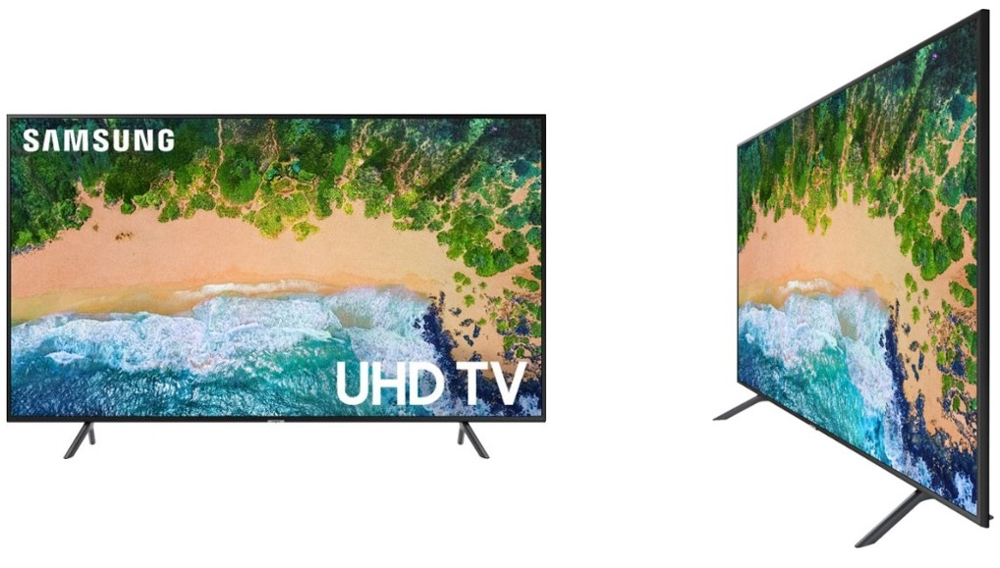
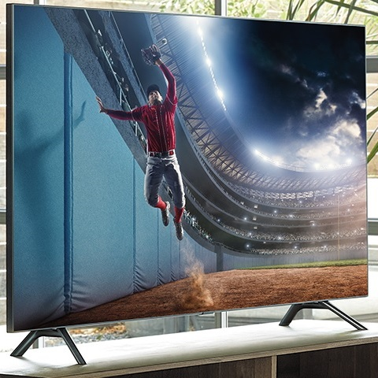

The Internet is Serious Business!
Home > Television > In Defense of 2000s Flat-Screen TVs
I don't really like the path that the design of flat-screen televisions has taken since the beginning of the 2010s. I would much rather see a return of 2000s-era flat-screen TVs.
For at least a couple of years now, TV design has been trending towards ultra-thin sets with a very thin border around the screen, much like this:

Not every TV made during the 2010s looks like this, of course, but it seems to be the dominant style today; contrast this with the design of 2000s flat-screen TV sets—which was much less uniform—a few examples of which are given below (click for larger versions).
It seems that people these days are obsessed with thinness, which, although not a bad thing, shouldn't come at the expense of sound quality. A lot of recent TVs, in their pursuit of thinness, seem to have moved the built-in speakers from the front of the set to the back, where they face away from the viewer; that, combined with the fact that the speakers cannot be too big because the TV is already very thin, means that the sound produced by 2010s TV sets are tinny and of poor quality, with the deep, low-frequency sounds being particularly bad. We have two TVs in our house that we bought during the 2010s (one was purchased in 2017, and the other in probably 2012), both of which are quite thin and don't have front-facing speakers, and, compared to the TVs we bought during the 2000s, the sound quality is noticeably worse. (Yes, I am aware that I can simply buy some good external speakers and connect them to the TV, but that is not the point here—why must I spend extra money to fix something that never should have gotten worse in the first place?)
Besides the sound, though, I also dislike the very thin borders around the screen. Many 2000s TVs had a rather sizable border of a few inches or so in width surrounding the screen, but newer TVs, especially since the mid-2010s, have very thin borders relative to the size of the screen, to the point that it seems like the borders aren't even there. An extreme example of this style is given below, in which the border is so thin that it seems to be entirely absent.

Though some may like this design that emphasizes the screen, I find it pretty strange: with that thin of a border, it does not feel like I am even watching a television, but instead some video that's just magically floating in the air. You might argue that the most important part of a TV is the screen, and that the current-day designs are simply emphasizing it, but I disagree—there is more to a TV than its screen (like the speakers, which, as I said earlier, have generally gotten worse), and a TV that, by its design, tries to look like a floating screen does not feel like a proper TV to me at all. The flat-screen TVs of the 2000s felt like real, sturdy television sets; the ones of the 2010s seem very flimsy by comparison.
I don't mean to say that everything about current-day TVs has gotten worse: smart TV features are very nifty, HD and 4K don't hurt (though 4K is largely overkill and hardly worth the money), and it's handy to be able to view videos, images, and music by plugging a USB mass storage device directly into the TV. I am not here to advocate for a return to old 4:3 CRT TV sets, either; I gave those up pretty quickly when we started getting flat-screens in our house. However, it is entirely possible for TV manufacturers to include all of the latest features in their sets while still keeping the design similar to what was common for 2000s-era flat-screens; that way, we can all get ultra-sharp smart TVs that also have good built-in speakers, and that don't unsettle us by looking like a magical floating screen.


 All written materials on this Web site are my own, and all are released under the Do What the Fuck You Want to Public License Version 2.
All written materials on this Web site are my own, and all are released under the Do What the Fuck You Want to Public License Version 2.
This page last modified on 29 March 2021.
{kind=link}
{kind=link}
{kind=link}
{kind=link}